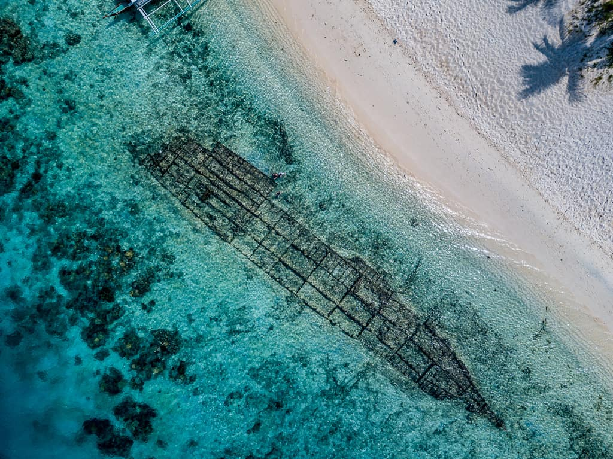

Coron Bay holds one of the greatest collections of WWII shipwrecks on earth — twelve Japanese warships sunk in a single American air raid in 1944, now resting on the seafloor and transformed into spectacular artificial reefs teeming with marine life.

On September 24, 1944, US Navy aircraft launched Operation Musketeer — a surprise attack on a Japanese fleet sheltering in Coron Bay, Palawan. In a single day, twelve Japanese supply ships and warships were sunk. Today, those wrecks lie on the seafloor of Coron Bay, encrusted with coral and inhabited by an extraordinary diversity of marine life.
Coron is consistently ranked among the top wreck diving destinations in the world — alongside Truk Lagoon in Micronesia and the SS Thistlegorm in the Red Sea. The wrecks range from shallow enough for snorkelers to deep technical dives, making Coron accessible to divers of all levels. The most famous include the Okikawa Maru, the Irako, and the Kogyo Maru.
Beyond the wrecks, Coron offers Kayangan Lake — considered the cleanest lake in Asia — the stunning Twin Lagoon, pristine coral gardens, and dramatic limestone karst scenery that rivals El Nido. Coron is one of the most complete travel destinations in the Philippines.
Coron is on Busuanga Island in northern Palawan, about 500 km southwest of Manila. It's reachable by direct flight or by ferry from Manila.
Fly from Manila to Francisco B. Reyes Airport in Busuanga. Philippine Airlines, Cebu Pacific, and AirAsia operate this route. The flight takes about 1 hour. From the airport, take a van to Coron town (~45 minutes).
Flight: ~1 hr | Van to Coron: ~45 min | ~₱1,500₱4,000 one-way2GO Travel operates a weekly ferry from Manila North Harbor to Coron. The crossing takes about 12 hours overnight. A budget-friendly option if you're not in a hurry — book a cabin for comfort.
Ferry: ~12 hrs | ~₱800–₱2,500 depending on cabin classCoron has dozens of dive shops along the main street. For wreck diving, book a 2-dive or 3-dive day trip with a licensed dive operator. For non-divers, island hopping tours cover Kayangan Lake, Twin Lagoon, and snorkeling over shallow wrecks.
2-dive day trip: ~₱2,500₱3,500 | Island hopping: ~₱1,200₱1,500All visitors to Coron must pay an Environmental Fee of ₱150 per person at the Coron Tourism Office. Divers pay an additional Dive Fee per wreck site. Keep your receipts — they are checked at each site.
Environmental fee: ₱150 | Dive fee per wreck: ~₱200Click any pin to explore Coron's famous shipwrecks, lakes, and island attractions.
Two days gives you time for the best wreck dives and the top non-diving attractions — Kayangan Lake, Twin Lagoon, and a sunset over Coron Bay.
The Okikawa Maru is the largest wreck in Coron — a 160-meter oil tanker lying at 15₱20m, perfect for Open Water divers. The deck is encrusted with hard and soft corals, and the holds are accessible for penetration diving. Schools of fish swarm around the superstructure.
The Kogyo Maru is a supply ship lying at 15₱30m, famous for its cargo of construction equipment — cranes, trucks, and machinery still visible on the deck. One of the most atmospheric wrecks in Coron, with excellent coral growth and visibility.
After lunch on the boat, advanced divers can tackle the Irako — a refrigeration supply ship at 42m, considered one of the most beautiful wrecks in Coron. The deep hull is covered in enormous sea fans and black coral trees.
Climb the viewpoint stairs for the iconic panoramic shot of Kayangan Lake — one of the most photographed views in the Philippines. Then descend to the lake itself for a swim in the crystal-clear water, snorkeling over the submerged limestone formations below.
Swim through the underwater passage connecting the two lagoons of Twin Lagoon. The inner lagoon is warmer — fed by hot springs — and the contrast between the two bodies of water is a unique natural phenomenon.
Climb the 700+ steps to the top of Mount Tapyas for a panoramic sunset view over Coron Bay, the surrounding islands, and the distant Calamian archipelago. The best view in Coron — and worth every step.
"I've dived wrecks in the Red Sea, the Maldives, and Micronesia — and Coron is the best wreck diving I have ever experienced. The Okikawa Maru alone is worth flying to the Philippines for. The scale of the wreck, the coral growth, the fish life — it's an underwater world that has been building for 80 years. And the visibility in March was extraordinary — 25 meters of crystal-clear water. Coron is a bucket-list destination for any diver."
"I'm not a diver — I came to Coron for the island hopping and Kayangan Lake. The lake alone is worth the trip: the clearest water I have ever swum in, surrounded by dramatic limestone cliffs, with visibility so good you can see the bottom 10 meters down. Twin Lagoon was magical. And the view from Mount Tapyas at sunset — Coron Bay turning gold below you — was one of the most beautiful things I've seen in the Philippines. Coron has something for everyone."